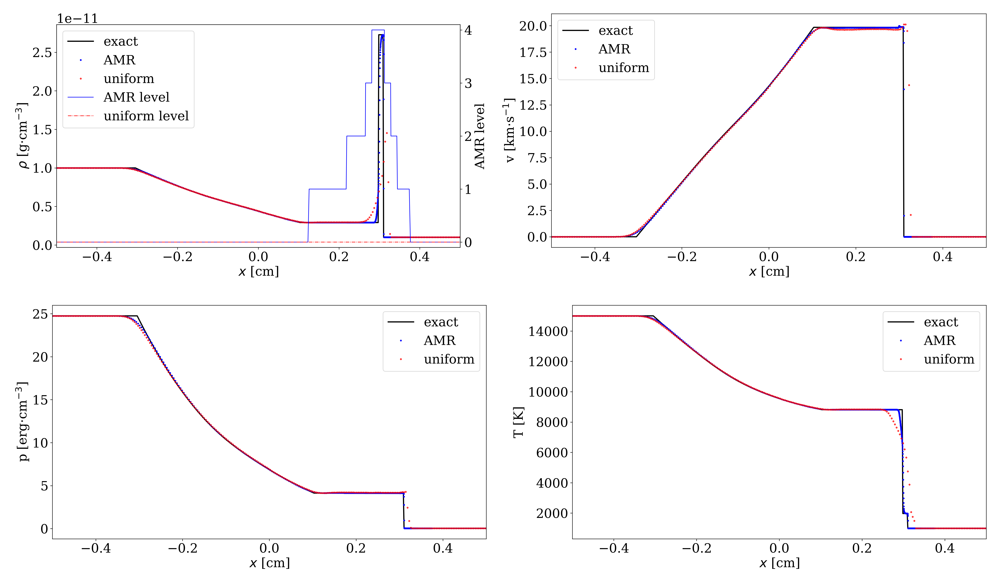
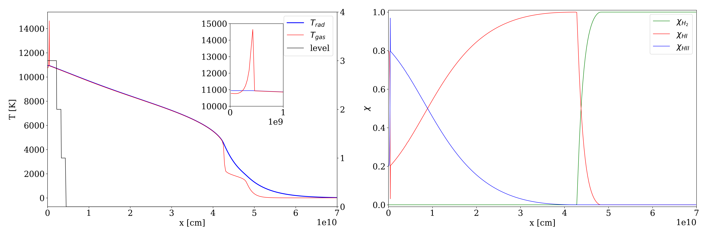

Equation of state and radiation-hydrodynamics
The need to incorporate complex equations of state (EoS) in radiation-hydrodynamics (RHD) is becoming increasingly important in computational astrophysics. In order to solve the RHD problem together with a complex EoS, we have proposed a novel exact Riemann solver and an HLLC type approximate Riemann solver in this paper. By applying the MUSCL scheme and AMR, the accuracy of the solution can be improved considerably.
{kind=link}
I have implemented an algorithm to couple the radiationhydrodynamics with a nonlinear equation of state and the static-mesh-refinement technique. The figure below shows a supercritical radiative shock calculation. The initial condition of the gas is \rho=7.78e-10g/cm^3, T=10K. The left boundary is a piston - a nonconducting wall, moving at a speed of 70km/s to the right. The right boundary adopts the Milne's boundary condition. The mean free path for the radiation is 3.1e-10 cm^{-1}, (both Planck and Roseeland mean opacity). We can clear see that a Zel'dovich spike is generated at the front of the piston. The radiation transfers energy to other places and change the temperature and composition of the gas.
{kind=link}